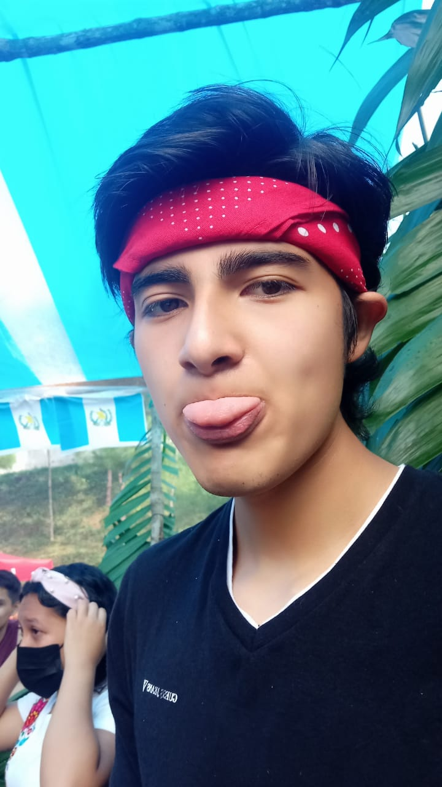

Bautista Ligorria Jose juan
Tengo 17 años de edad vívo en San Pedro Carcha,estudiante de la carrera bachillerato industrial y perito en computación, el tema que me tocó desarrollar fue Química.
Cap Perez Huber Aroldo
Mi nombre es Huber Aroldo Cap Pérez estudiante del colegio tecnológico el tema que me asignaron para la página fue propiedades de los elementos.
Hun Prado Brayan Julian Augusto
Mi nombre es Hun Prado Bryan Julián Augusto, tengo 17 años de edad. Nací el 6 de agosto del 2005 en el municipio de Cobán, Alta Verapaz. Actualmente vivo en Cobán. Curso el 6to año de la carrera de bachiller industrial y perito en computación en el Colegio Tecnológico en Informática.

Martinez Perez Kevin Geovany
Tengo 18 años de edad. Actualmente vivo en Cobán. Curso el 6to año de la carrera de Bachiller Industrial y Perito en Computación en el Colegio Tecnológico en Informática. Realice el tema de Reacciones Químicas
Pop Garcia Diego Alejandro
Nací en 24 de mayo de 2004 ahora tengo 18 años y lo que más me gusta es conducir motocicleta estoy cursando la carrera de computación y espero graduarme este año de perito en computación y continuar mis estudios en la universidad
Reyes Calel Valeria Cristina
Mi nombre es Valeria Cristina Reyes Calel, tengo 17 años de edad, nací el 20 de junio de 2005 en el municipio de San Cristóbal Verapaz, actualmente vivo en Santa Cruz verapaz, curso la carrera de bachillerato industrial y perito en computación en el Colegio tecnológico en informática.
Sierra Belteton Daniel Armando Esthepano
Soy estudiante de sexto computacion, me encargue de desarrollar el tema de la tabla periodica y parte del diseño de la pagina.
Tzul Coy Javi Jose Armando
Mi nombre es Javi José Armando Tzul Coy, tengo 17 años de edad. Nací el 16 de abril del 2005 en el municipio de Cobán, Alta Verapaz. Actualmente vivo en Cobán. Curso el 6to año de la carrera de bachiller industrial y perito en computación en el Colegio Tecnológico en Informática. Realicé el tema que me asignaron que es el Átomo.